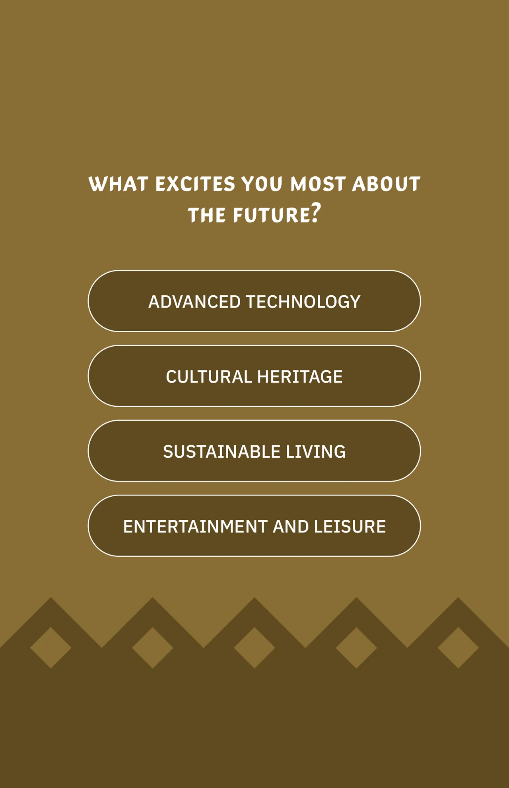

Four generous choices
Company and campaign marks were removed only as fully isolated native vector objects; full artboard bounds and all other pixels are retained.
Four choices, shaped for different prompts.
Explore the story
Keep question-and-answer layouts clear across landscape and portrait surfaces.
The scent screen distributes four options across a purple field. The future-interest interface stacks four larger responses within a taller patterned composition.
Company and campaign marks were removed only as fully isolated native vector objects; full artboard bounds and all other pixels are retained.
A landscape screen asks visitors to identify a scent using four evenly spaced answer buttons on a purple field.
A tall companion concept asks about future interests, with four stacked response targets and a subtle patterned background.
Explore the complete compositions and interface states. Select any image for a closer look.
02 / PROJECT IMAGES
Select a view to explore.
Purple scent quiz with a question and four answer buttons labeled Lavender, Vanilla, Lemon and Cinnamon.
Complete companion native telescope view for scent and future-choice event interfaces.

Structure, interaction and visual decisions that give the work its character.
RoleContribution awaiting confirmation
AssetsPrivate evidence draft. Individual contribution, implementation and public-use permission remain unverified. Saved source artwork does not establish personal authorship or original modeling. Supplied, licensed, collaborator and AI-assisted components require separate attribution. These are two draft components within a wider National Day archive. Supplied campaign patterns, fonts and question copy require attribution and approval; no separate-commission or hardware-delivery claim is made.
StatusPrivate native-artwork draft; contribution, implementation and public use unverified